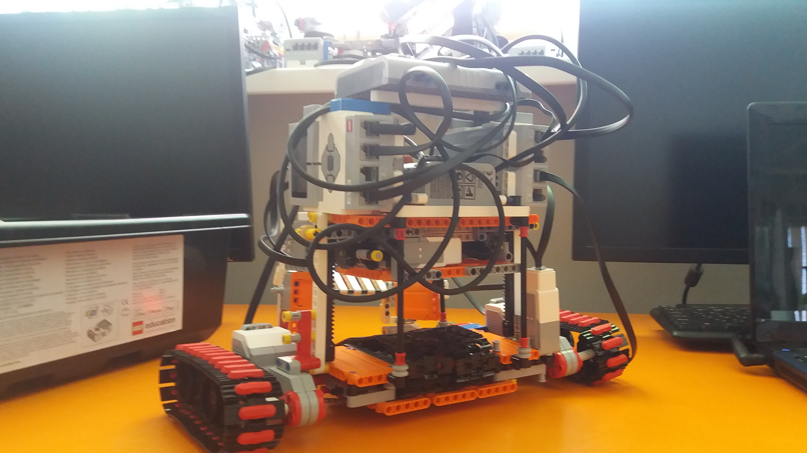
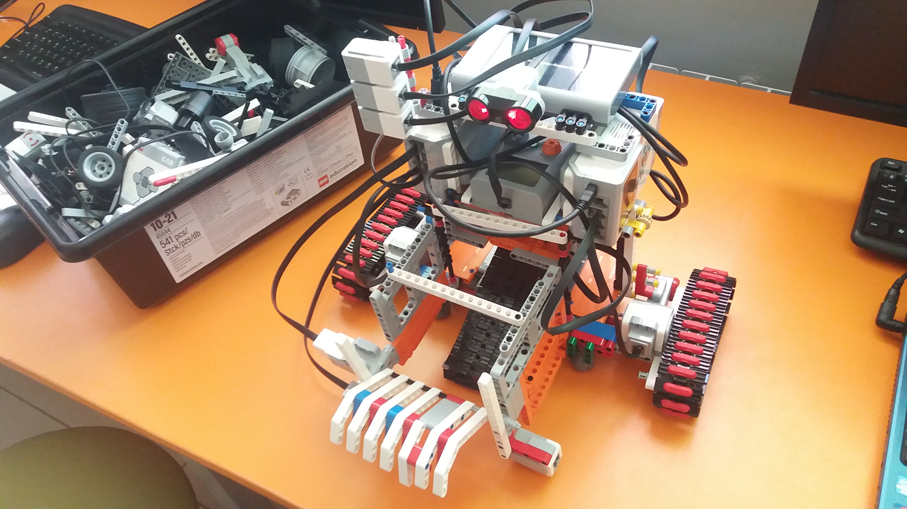

В память о роботе, который мог изменить мир!
25 января 2019 года в самолёте S7 Airlines расплавилось
Величайшее Изобретение Человечества (ВИЧ) - робот ЭкоБот.
Эта умная машина могла собирать и сортировать мусор и,
возможно, когда-нибудь могла бы очистить этот, теперь уже
не совсем голубой, (из-за мусора) шарик. Обзор сайта здесь

